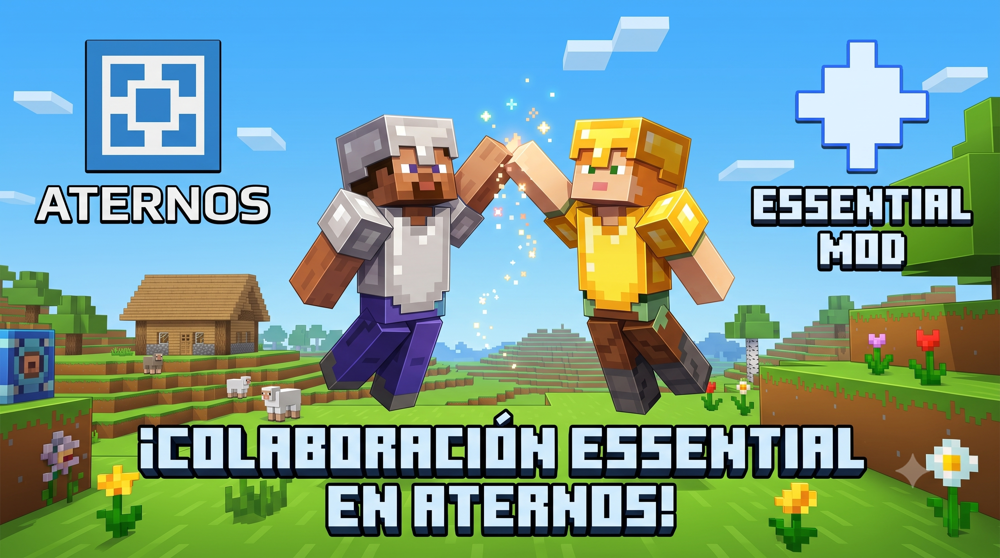

Cómo crear un servidor de Minecraft GRATIS para jugar con amigos

Juega con amigos sin pagar mensualidades
Antes, necesitabas abrir puertos en tu router y usar aplicaciones peligrosas para alojar un servidor. Hoy en día, existen servicios gratuitos y mods que lo hacen todo por ti.
Opción 1: Aternos (El rey de lo gratuito)
Aternos te permite crear un servidor con un solo clic desde tu navegador. Puedes instalar plugins, mods (Forge/Fabric) y jugar siempre que quieras. La única desventaja es que debes esperar una pequeña "cola" para encenderlo si hay mucha gente y, si no hay jugadores conectados, se apaga a los 5 minutos.
Opción 2: El Mod Essential (Jugar en LAN por Internet)
Si tu PC es medianamente decente, puedes instalar el mod Essential desde LFZ Launcher. Este mod añade una lista de amigos directamente en el menú de Minecraft. Solo tienes que abrir tu mundo de un jugador, invitar a tu amigo por Essential, y se unirá instantáneamente sin tener que configurar un servidor.
Ambas opciones son 100% gratuitas y soportan skins si usan LFZ Launcher con sus cuentas de Microsoft vinculadas.